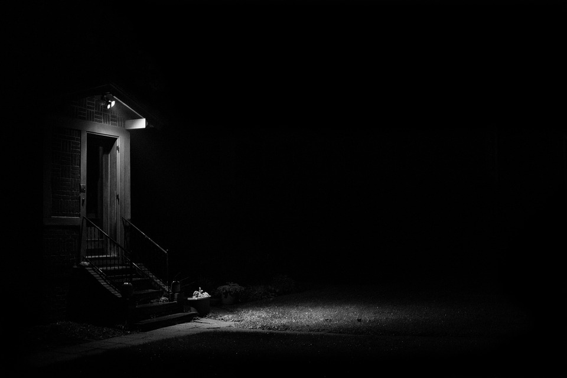

2.4-Iluminacion y Color

El control de la luz y el color por parte del fotógrafo es otra herramienta poderosa a la hora de transmitir sensaciones que van más allá de la percepción visual y para dirigir la atención, algunos expertos afirman que el elemento principal de la fotografía es la luz, un buen manejo de luz dará mayor valor a la fotografía. Véase el artículo iluminación en fotografía para mayor detalle.
Así, por ejemplo, para resaltar el motivo es conveniente buscar un contraste de tono y/o color entre el motivo y el fondo. También es conveniente simplificar la composición, buscar fondos uniformes y pocos colores muy marcados en la foto; evitar los fondos llenos de detalles que puedan distraer la atención. En general es más impactante una fotografía con pocos elementos y pocos colores muy contrastados que una fotografía con muchos elementos en los que ninguno resalta especialmente sobre el resto.
Una opción vistosa para resaltar algunos motivos puede ser la de utilizar un marco natural que lo rodee como fondo (pe. un pórtico, el marco de una ventana, arreglos vegetales, etc).
Del mismo modo, los distintos tipos de luz solar pueden producir distintos tipos de sombras y matices afectando a la percepción de las texturas y los volúmenes:
- La luz del mediodía es una luz dura, intensa y que elimina las sombras, lo cual afecta negativamente a la percepción del volumen y los matices de la superficie de los objetos. En general no suele ser buena para la fotografía.
- La luz de la mañana ilumina con tonos frescos apastelados y difumina normalmente los detalles lejanos.
- La luz del atardecer ilumina lateralmente y con tonos dorados y cálidos produciendo sombras ténues y sutiles que resaltan la textura de los objetos y su volumen.
Según las estaciones la luz también es ligeramente diferente y ello también afecta a estos parámetros, y, por supuesto, el tiempo meteorológico también es crucial en este aspecto. Lo importante es que el fotógrafo sea consciente de la iluminación de que dispone en cada momento y su efecto sobre la fotografía de modo que pueda intentar contrarrestarlo (pe. con iluminación artificial, con un filtro,...) o simplemente cambiar de lugar o de punto de vista para realizar la toma en mejores condiciones.
El color también es importante ya que puede ser utilizado como otro recurso expresivo más. La saturación de color evoca intensidad y los tonos suaves tranquilidad. La cantidad de colores y su gama afecta también a la percepción del espectador y a las sensaciones que en él se pueden evocar.
Finalmente, la fotografía en blanco y negro es también muy impactante y ayuda a resaltar mejor los contrastes y las variaciones tonales (por ejemplo de la piel). Además ayuda a que el color no distraiga de otros recursos expresivos (como la forma, la textura, la expresión de una cara) que el fotógrafo desee primar.
Pregunta de Selección Múltiple
Solución
Licencia: dominio público